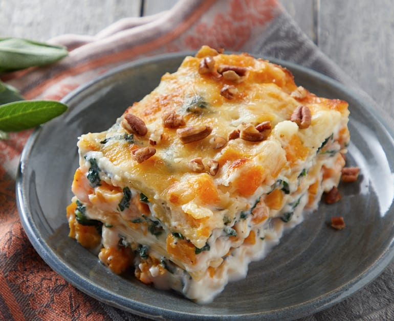

Lasagna

Random recipe for squash lasagna sourced from Allrecipes.com
Ingredients
- 1 large spaghetti squash, halved and seeded
- 1 tablespoon olive oil, or as needed
- 1 cup chopped onion
- 5 cloves garlic, minced
- 1 pound bulk pork sausage
- 2 tablespoons Worcestershire sauce
- 1 tablespoon Italian seasoning, or more to taste
- 2 teaspoons salt, divided
- 1 (28 ounce) can Italian crushed tomatoes
- 4 tablespoons Marsala wine
- 28 ounces ricotta cheese
- ½ cup shredded Parmesan cheese
- 3 sprigs fresh basil, leaves stripped from stems
- 1 teaspoon ground black pepper
- 1 (16 ounce) package sliced fresh mozzarella cheese
- 2 tablespoons thinly sliced fresh basil leaves, or to taste
Steps
- Preheat the oven to 400 degrees F (200 degrees C). Line a baking sheet with parchment paper.
- Place each squash half cut-side down on the prepared baking sheet.
- Bake in the preheated oven until easily pierced with a knife, about 45 minutes. Remove from oven and cool until easily handled. Scrape insides of squash into spaghetti strands with a fork. Transfer to a colander and place over a bowl to drain.
- While squash is baking, heat olive oil in skillet over medium heat; stir in onion and garlic. Cook and stir until the onion has softened and turned translucent, about 5 minutes. Add sausage, breaking it up with a sturdy spoon to remove clumps. Cook and stir sausage in the hot skillet until browned and crumbly, 5 to 7 minutes.
- Stir Worcestershire sauce, Italian seasoning, and 1 teaspoon salt into the sausage mixture. Add crushed tomatoes, reduce heat to low, and simmer for 30 minutes. Add wine and cook for another 30 minutes.
- Mix ricotta cheese, Parmesan cheese, basil leaves, remaining 1 teaspoon salt, and pepper together in a bowl.
- Layer 1/2 of the shredded spaghetti squash, 1/2 of the ricotta mixture, and 1/2 of the meat mixture in a 4-quart glass baking dish. Repeat layers once more, and top with mozzarella cheese slices.
- Bake in the preheated oven, turning halfway through, until cheese is golden, about 1 hour.
- Remove from the oven and immediately top with thin basil slices. Allow to cool for about 10 minutes before slicing and serving